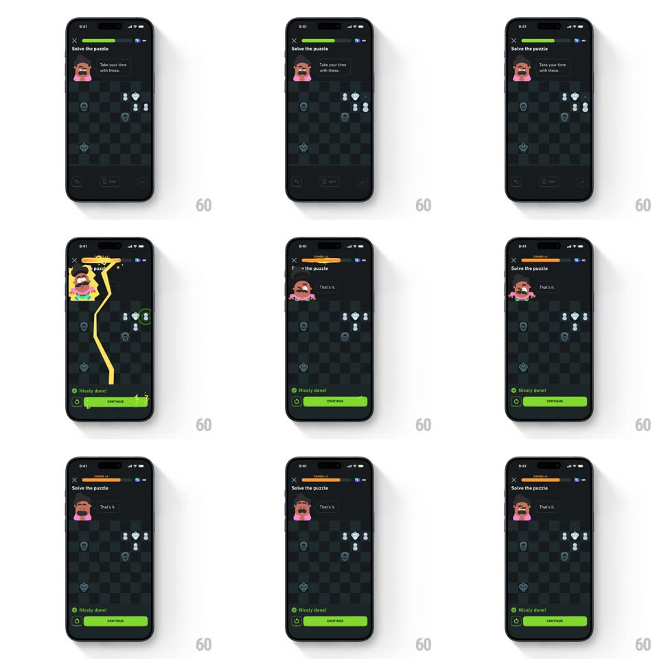

Media
Frame-by-frame

Rebuild this animation 1:1: Duolingo Chess' combo-5 thunder - on the fifth straight solve, a lightning bolt cracks down the screen through a glowing Oscar, the progress bar flips to COMBO x5 orange, and the success sheet slides up.

Rebuild this animation 1:1: Duolingo Chess' combo-5 thunder - on the fifth straight solve, a lightning bolt cracks down the screen through a glowing Oscar, the progress bar flips to COMBO x5 orange, and the success sheet slides up.
## Integration
Integration: stack-agnostic spec - springs given as stiffness/damping, timed motions as duration + curve; map every value to your framework and animation library of choice.
## Scene
Duolingo Chess puzzle, near-black: "Solve the puzzle" title with close X, green progress bar, Oscar top-left with his bubble ("Take your time with these." then "That's it."), chess board, and the bottom success sheet ("Nicely done!" with a green Continue button).
## Motion spec
Pattern: full-screen lightning strike plus combo-tier celebration on solve.
- The correct move lands (piece slide, 250ms), then the combo fires: the progress bar's segment fills orange (250ms) and a "COMBO x5" tag pops on it (scale 0.5 -> 1.2 -> 1, spring ~450/14).
- A jagged lightning bolt draws from the top edge down through Oscar's position to mid-board (stroke draw, 150ms, yellow-white), while Oscar bursts in a yellow radial glow (scale 1 -> 1.15, spring ~400/12) with small star sparks around him.
- The screen gets one 80ms white flash at 25% opacity as the bolt lands - a single hit, not a strobe.
- Oscar's bubble crossfades to "That's it." (200ms) as the bolt dissolves upward (200ms fade).
- The success sheet slides up from the bottom (translateY 100% -> 0, spring ~320/20, ~400ms) 250ms after the bolt: green check, "Nicely done!", and Continue.
## Calibration
- One bolt, one flash - the drama comes from speed (150ms draw), not repetition.
- The bar's combo segment is orange against the normal green - the tier shift must read instantly.
## Reduced motion
Skip the bolt and flash; Oscar glows once and the sheet slides up.
## Don't miss
- The bolt passes through Oscar - he is the conductor, glow and all.
- The success sheet waits for the bolt to finish - layered payoff, not a pile-up.